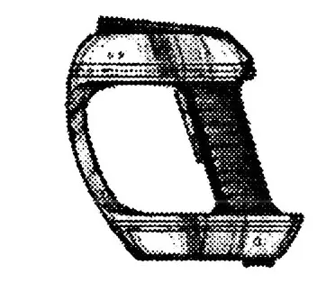

Introduction
Essentially complex and sensitive instruments to measure various physical properties, they analyze the results, with onboard computers. Most can store the recorded information, to be downloaded to larger computers for more detailed Analysis.
Analyser
Extremely sophisticated, analysers essentially gather, process and interpret volumes of data into forms users can understand and identify with. They are valued in research and are structured so that one will only be of constructive use if the user has at least a few of the skills that unit specializes in. Each is handheld and has an effective sensor range of 5 m. They are controlled by touch sensitive display, but for the most part take advantage of extensive voice input/output capabilities. There are two main types of analysers;
BIO
This device is used to scan living tissues. It is able to indicate numerous beneficial, harmful, or simply interesting physiological traits, such as the edibility of plant or animal life or the type and severity of ailments. Bioanalyzer add -20 to the SKILL DIFF when investigating into either Agriculture, Anatomy/Physiology, Biology, Botany, First Aid, Medicine, Surgery, or Zoology.
MATTER
This device is used to scan the chemical, magnetic, thermal, electric, and stress properties of a substance or mechanism. It can predict the possible function and performance of equipment and will suggest upkeep guidelines. These units can be useful to technicians investigating Chemistry, Geology, Physics, and most Sci-Technica fields by adding -20 to their SKILL DIFF.

Audio Ampufactors
Designed and moulded to fit completely within the ear canal, a set of audio ampufactors can perform overall amplification and basic filtering of sound waves. An optional interface unit can be attached to allow a computer to aid the set in processing and filtering of specific signals or frequencies. So with the help of the computer the set can pick out a person's speech across a noisy room and other similar tasks. The upper limit the set can detect is 85 Khz, however racial hearing maximus are a factor.
Biomoniter
Excellent for the sports enthusiast this 4 cm wide band holds a mini-computer and sensor which records and displays several vital statistics of the wearer. Information about heart rate, sinus rhythm, and metabolic rate are standard data outputs with ECG, and EEG also possible. Up to 5 days of data is stored crysta-optically which can be displayed on the screen or downloaded to any medical computer or PC for analysis.
Hand Sensor
Able to sense movement (by micro-pressure fluctuations) and IR emissions the unit can determine the approximate distance to warn or moving objects. The display, a 5 x 5 cm screen atop the horse-shoe shaped device, shows moving objects in relation to their background. Other compatible displays can also be attached for colour or enhanced resolution viewing. The maximum range is 50 meters with more accuracy at shorter ranges.
IR Visor
This visor translates InfraRed wavelengths into visible frequencies that can be seen by the wearer. This effectively allows the heat differences between -120 to 3000°C to be seen as various colours or shades. A small key is displayed at the top of the visor to indicate the range of temperature being viewed and the appropriate colours that represent them.
Light Ampufactors
Looking like a pair of wide sunglasses these perform the same amplifying and filtering functions as their audio counterparts, except in the visual spectrum.
Low Spectrum Visor
Allowing the wearer to see the low end of the EM spectrum, like radio and microwaves. This allows the wearer to visually see the position of radio, or microwave sources like communicators or other telecommunication devices.
Microptic Visor
Effectively magnifying the objects being looked at, these visors have a maximum of 1000X. The amount of magnification is dependent on the focal distance of the eyes of the wearer, this greater the distance the higher the magnification. So when a person looks closer at something the scene automatically becomes magnified.
Night Vision Contacts
These contact lenses fit against the wearers own lenses and amplify incoming visual and high IR frequencies of light. The overall effect is that of making the background light from a dark night bright as day. They automatically "turn-off" in response to bright light so they only amplify in low-light. Disposable after 1 year they never need be removed one in place. A cleaning kit (case for the lenses and solution) is an option if a cleaning is desired.
Remote Sensor Station
Standard data recording of seismic, atmospheric data (including all aspects of weather), radiation. Standing on a 2 m tall tripod the station is fitted with audio and video survey equipment. All data is either stored or down loaded via standard telemetry link.